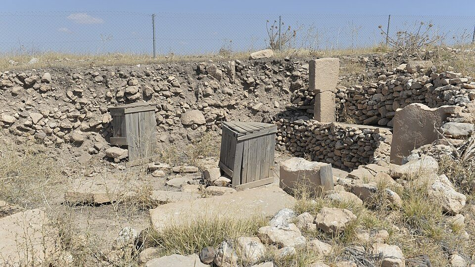

AcervoGöbekli Tepe
Pedra e Poeira · Şanlıurfa, Turquia PublicadoIdade11.600 anos
Escavado≈ 10% do sítio
Os recintos não ruíram: foram encontrados cheios. Caçadores-coletores ergueram pilares de calcário de cinco metros e meio no alto de uma colina sem água — seis mil anos antes de Stonehenge, antes da agricultura e da cerâmica. Séculos depois, tudo sumiu sob entulho. A arqueologia ainda discute se foi sepultamento ritual ou a encosta cedendo.